La sierra de Madrid, conocida como Sierra de Guadarrama, es una de las áreas naturales más emblemáticas de la Comunidad de Madrid. Esta sierra forma parte del Sistema Central y se extiende entre las provincias de Madrid y Segovia. Es un destino popular tanto para los habitantes de la capital como para turistas que buscan disfrutar de la naturaleza, realizar actividades al aire libre o descubrir la historia de sus pueblos.
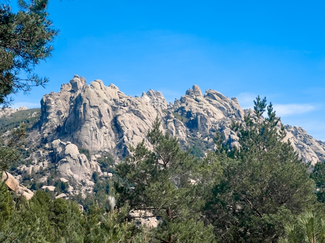
La primavera y el otoño son las mejores épocas para visitar. Ideales para senderismo y disfrutar de los paisajes. En invierno, la nieve cubre las cumbres, ofreciendo opciones para esquiar y practicar deportes de invierno.
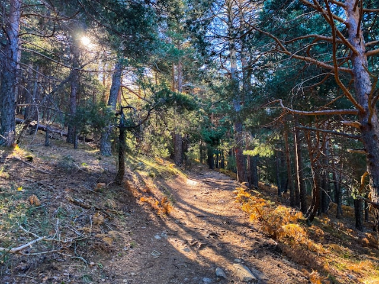
La Sierra de Guadarrama alberga una gran diversidad de flora y fauna, lo que la convierte en un lugar privilegiado para los amantes de la naturaleza. Entre sus bosques se encuentran pinos silvestres, robles y fresnos, que crean un entorno único en cada estación del año. Además, es hogar de numerosas especies animales, como el águila imperial, el buitre negro y el lobo ibérico, todos ellos protegidos.
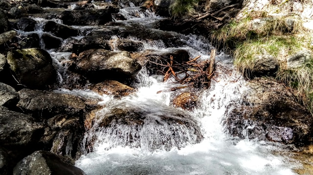
Pueblos
Los alrededores de la sierra están llenos de pueblos que destacan por su belleza y su historia:
Manzanares el Real: Famoso por su imponente Castillo de los Mendoza, un ejemplo de arquitectura medieval perfectamente conservado, y por su proximidad al Parque Regional de la Cuenca Alta del Manzanares.
Rascafría: Ubicado en el valle del Lozoya, Rascafría es conocido por su tranquilidad y su cercanía al Monasterio de El Paular. También es el punto de partida para rutas hacia el Puerto de Cotos.
Cercedilla: Un pueblo tradicional de montaña que cuenta con importantes infraestructuras para deportes de invierno y senderismo.
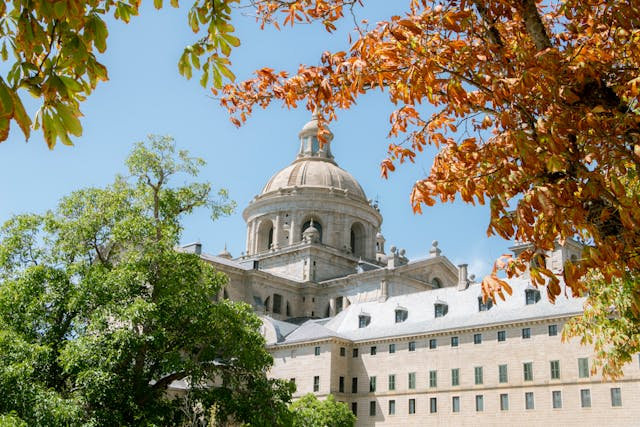
El Escorial
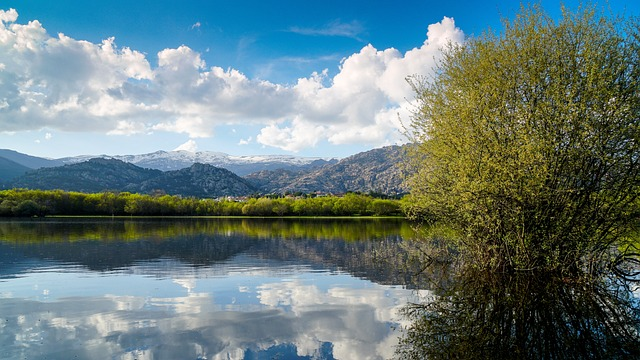
Cercedilla
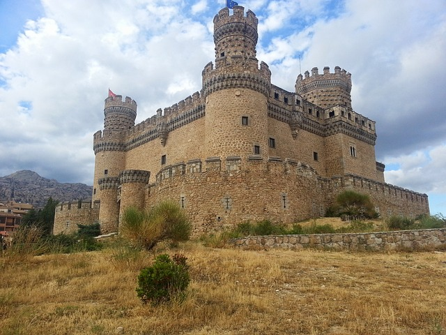
Manzanares el Real
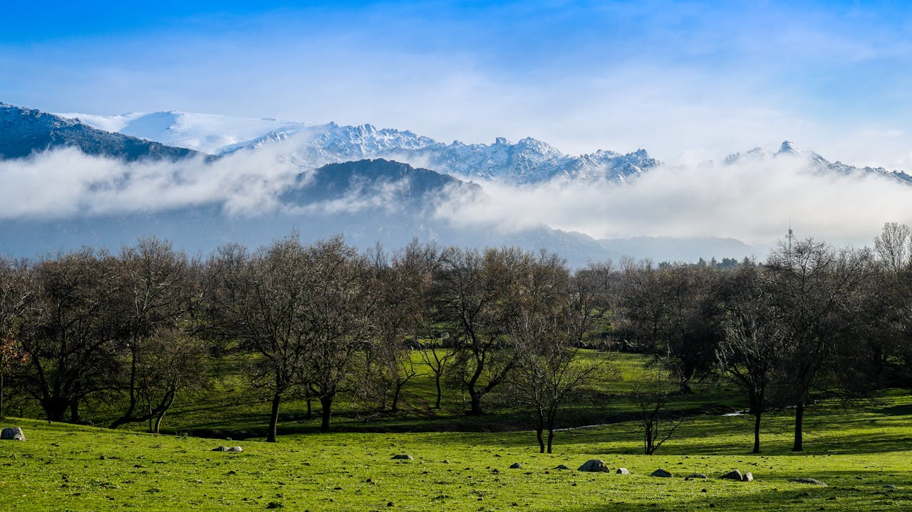
Rascafria
Galeria
La galería fotográfica de la Sierra de Madrid captura la esencia de este impresionante entorno natural a lo largo de las estaciones. A través de estas imágenes, se descubre la majestuosidad de sus montañas cubiertas de nieve en invierno, los coloridos paisajes que ofrece la primavera, la frescura de los arroyos en verano, y la cálida gama de colores ocres y dorados del otoño.
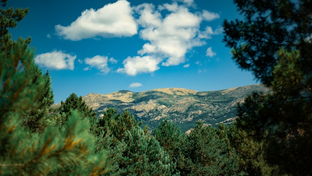
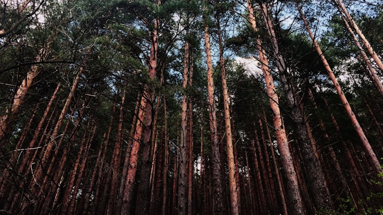
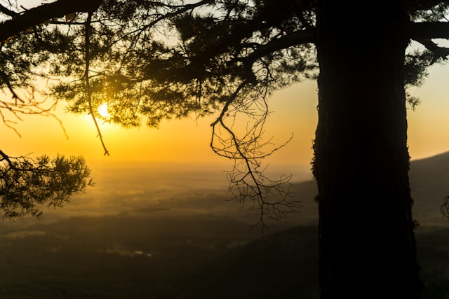
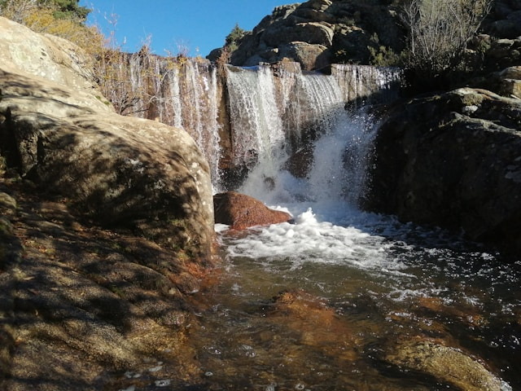
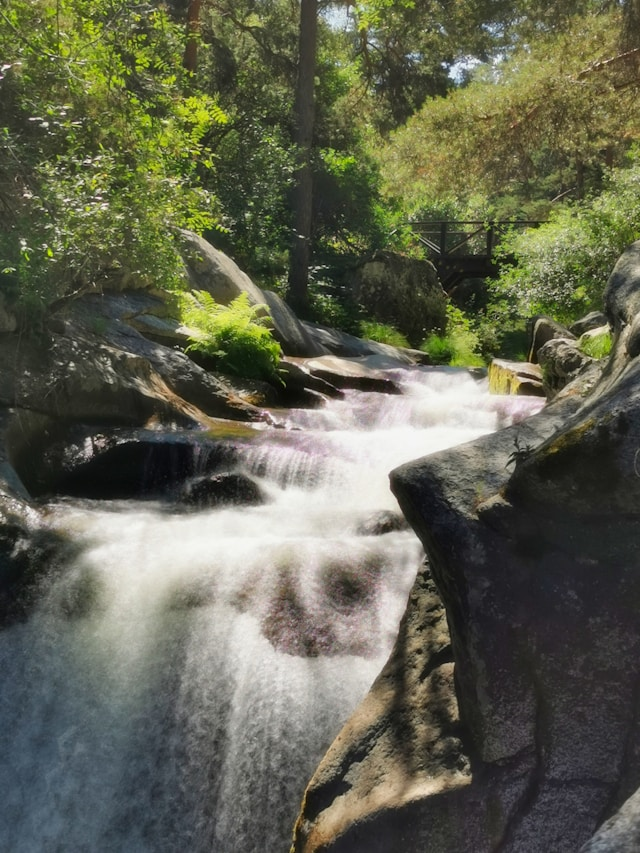
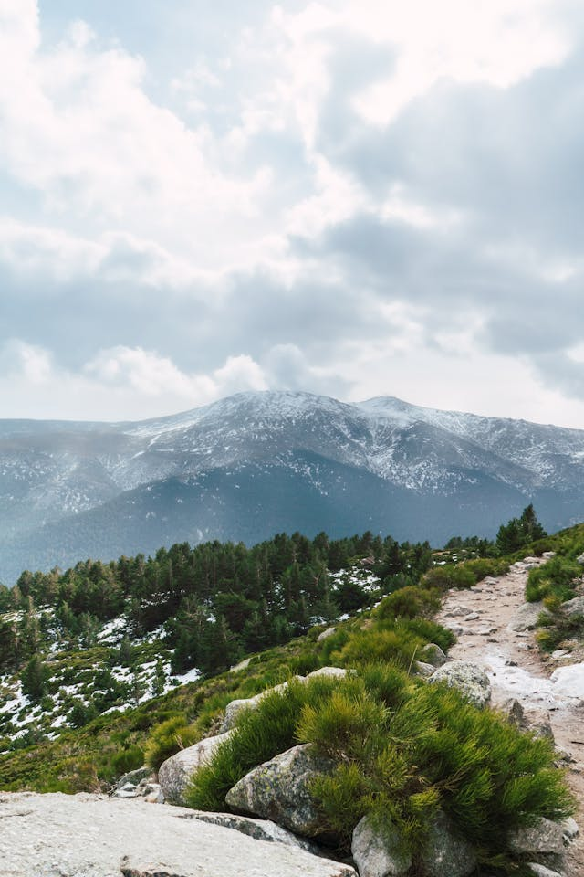
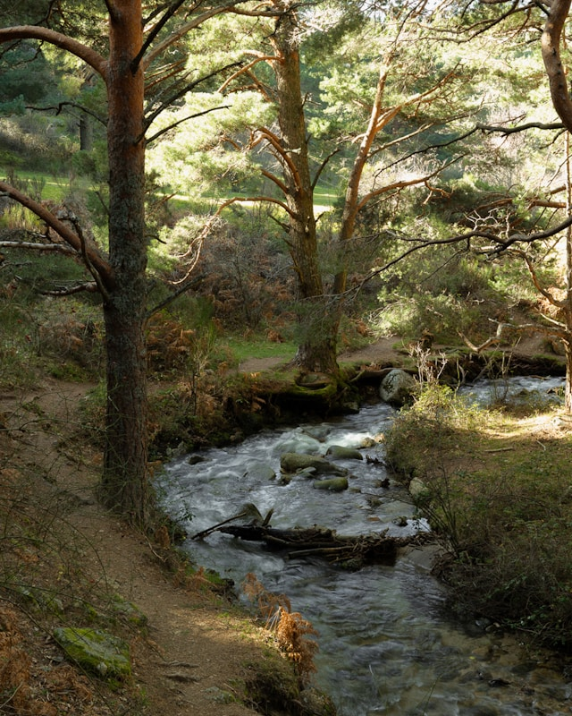
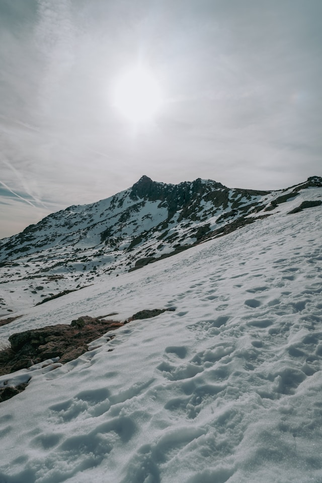
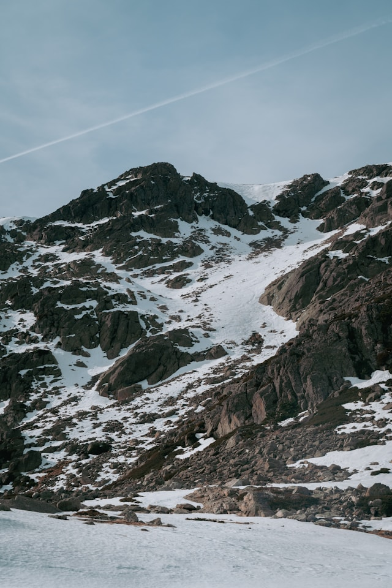
Rutas
La sierra es un lugar ideal para el senderismo, con rutas para todos los niveles de dificultad, como la conocida Senda Schmidt o el ascenso al Pico de Peñalara, permiten a los visitantes adentrarse en paisajes que varían desde frondosos valles hasta majestuosas cumbres.
Ruta al Pico de Peñalara: Una de las rutas más populares, que lleva a la cima más alta de la sierra. Durante el camino, se pasa por la Laguna de Peñalara, un hermoso lago de origen glaciar.
Ruta de los Siete Picos: Es otra clásica ruta de montaña que permite disfrutar de un paisaje rocoso con vistas a todo el valle.
Camino Schmidt: Un sendero histórico que conecta el Puerto de Navacerrada con Cercedilla.
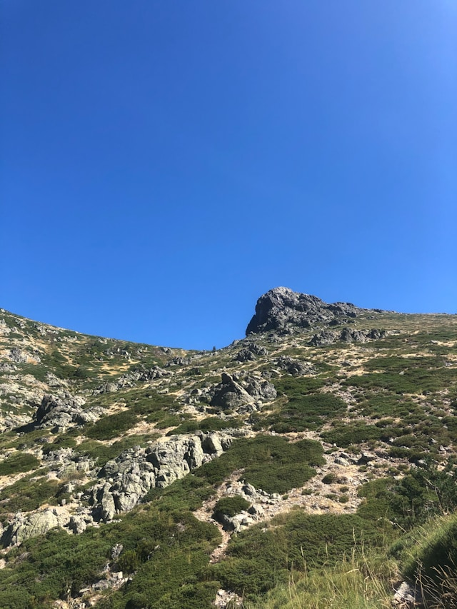
Ruta al pico de Peñalara
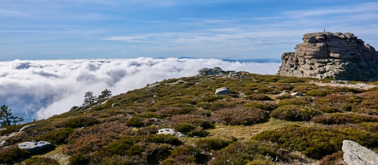
Ruta de los siete picos
Camino Schmidt
Actividades
La riqueza natural y la oferta de actividades hacen de la Sierra de Madrid un espacio idóneo para conectar con la tranquilidad y belleza del entorno rural. Además del senderismo, la sierra es un lugar perfecto para otros deportes al aire libre:
Esquí y snowboard: En invierno, las estaciones de esquí de Navacerrada y Valdesquí son muy frecuentadas por los amantes de los deportes de nieve.
Escalada: Zonas como La Pedriza, conocida por sus formaciones rocosas de granito, son muy apreciadas por los escaladores.
Ciclismo de montaña: Existen rutas de gran belleza que atraviesan los valles y las laderas de la sierra, ideales para el ciclismo.